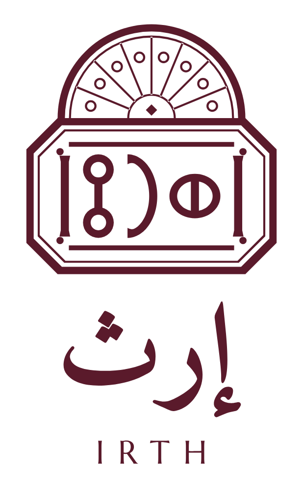
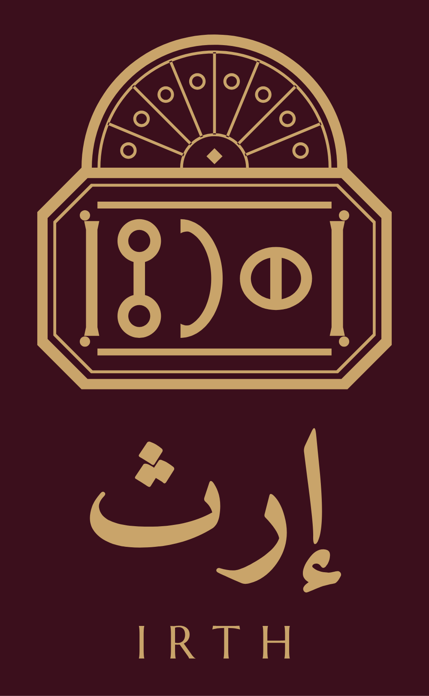

حزمة التطوير ١الاتجاه ب · ختم القمريةIRTH · BRAND BOOK
الاتجاه ب · ختم القمرية
في البيت الصنعاني تعلو القمرية النافذة. وهنا تعلو الختم، فيصير نافذةً كاملة. شعار تراثي للمواضع الأعلى مقاماً: غطاء علبة الهدايا، وشهادة الأصالة، ولوحة المحل الرئيسية.



١القمرية تقوم على الحافة العليا للختم، بعرضها تماماً، فلا يُعاد رسم الختم.
٢حزامها بسماكة إطار الختم، وخطها الداخلي بسماكة خطه الرفيع.
٣في النسخة الملوّنة ألوان الزجاج من ألوان خطوط المنتجات: اللوز والعسل والبن، مع الرازقي والعنابي.
٤يُستعمل بلون واحد في العموم، وبالزجاج الملوّن في طبعات المواسم وحدها.
إعداد وتصميم: م/ أحمد درهم حسين الفقيه — الشريك المؤسس ومدير المشروعU8